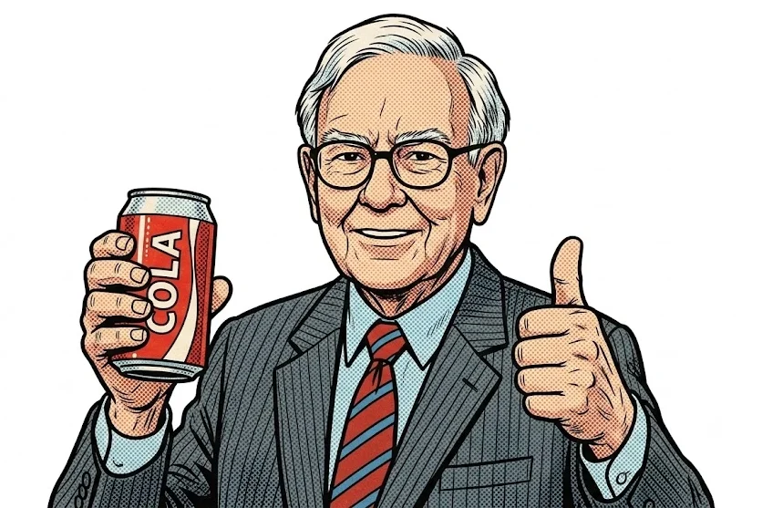

Titans' picks
Berkshire Hathaway holdings · latest filing

Warren Buffett took control of Berkshire Hathaway in 1965 and, over the decades, moved away from buying cheap companies toward holding good ones. He looks for a business whose earnings he can understand, that rivals find hard to copy, and whose managers he can leave alone — and then keeps it for years. Open any row below to see how a position moved, quarter by quarter.
워런 버핏은 1965년 버크셔 해서웨이의 경영을 맡은 뒤, 싼 회사를 사는 데서 좋은 회사를 오래 갖는 쪽으로 옮겨 갔습니다. 무엇으로 돈을 버는지 이해할 수 있고, 경쟁자가 쉽게 흉내 내지 못하고, 맡겨 두어도 좋을 경영진이 있는 회사를 골라 여러 해를 들고 갑니다. 아래 목록에서 한 줄을 펼치면 그 판단이 분기마다 어떻게 움직였는지 보입니다.
“Be fearful when others are greedy, and be greedy when others are fearful.”
New York Times, 16 October 2008
“남이 탐욕스러울 때 두려워하고, 남이 두려워할 때 탐욕스러워지라.”
2008년 10월 16일 뉴욕타임스 기고
“Our favorite holding period is forever.”
1988 letter to shareholders
“우리가 가장 좋아하는 보유 기간은 ‘영원히’입니다.”
1988년 주주 서한